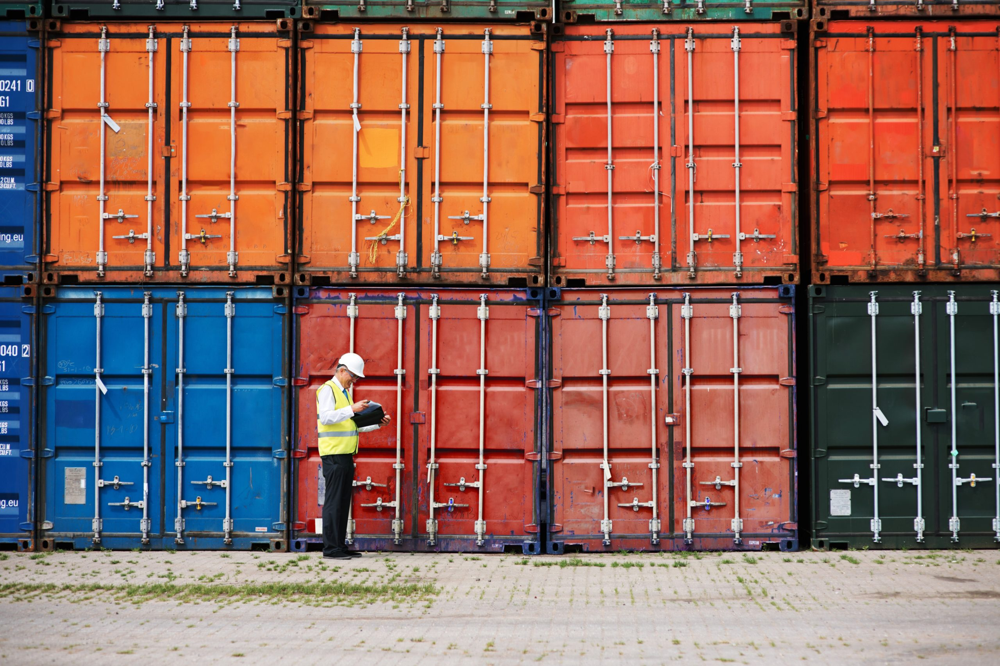
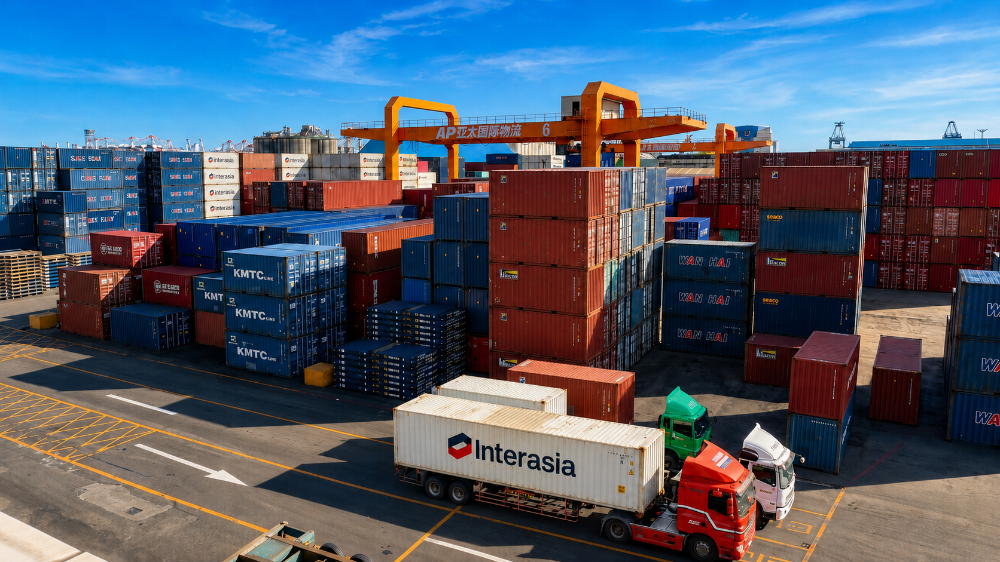

廠區安全管制
24 小時門禁管制，依海關規定設置監視系統，並由警衛不定時巡邏，防範外人入侵，確保貨物安全。

FACILITIES

廠區面積約 7.69 公頃，場區設置 24 小時 CCTV 監控與出入口管制，保障貨物與人員安全。場區依作業需求規劃貨櫃堆置區域與動線，確保車輛通行順暢、作業安全有序。作業人員進出場區均配戴安全帽與反光背心，落實職業安全管理，確保作業環境安全無虞。
| 貨櫃儲運場 | 66,115 m² |
|---|---|
| 倉庫 | 11,628 m² |
| 土地面積 | 76,890 m² |
| 行政中心 | 2,490 m² |
EQUIPMENT CONFIGURATION

廠區依作業需求配置多元化機具設備，並定期保養維護，維持設備妥善率與作業穩定性。
| 起重設備 | 軌道式起重機 2 台（40 噸）；移動式起重機 2 台（35 噸） |
|---|---|
| 堆高設備 | 重型堆高機 2 台（25–28 噸）；空櫃堆高機 8 台（10–18 噸）；CFS 堆高機 25 台 |
| 轉運設備 | 曳引車 2 台；板架 11 部 |
註：機具設備將依作業需求及使用年限不定期汰換更新。
CAPACITY

亞太位於高雄港後線核心基地，擁有充足廠域與專業機具支撐月度高強度作業量能，確保貨櫃流轉高效穩定。
| 貨櫃儲運場最大儲存量 | 5,000 個 |
|---|---|
| 倉庫最大儲存量 | 14,000 噸 |
| 貨櫃儲轉 | 30,000 個／月 |
| 倉儲作業 | 50,000 噸／月 |
OCCUPATIONAL SAFETY

亞太將人員安全與健康置於日常營運的重要位置。面對貨櫃場、倉儲、機具維修及車輛往來等不同作業情境，我們持續把安全要求納入作業規劃與現場管理。
了解更多OPERATIONAL ADVANTAGES
24 小時門禁管制，依海關規定設置監視系統，並由警衛不定時巡邏，防範外人入侵，確保貨物安全。
調度、場管與維修團隊依船期及貨物型態安排動線，銜接貨櫃進港、暫置、出站與轉運。
配置起重、堆高與轉運設備，支撐貨櫃儲運場 5,000 個最大儲存量與每月 30,000 個儲轉量能。
LOCATION
亞太座落於高雄港第三貨櫃中心後線，鄰近小港國際機場、高速公路與各貨櫃中心，具備絕佳地理優勢。